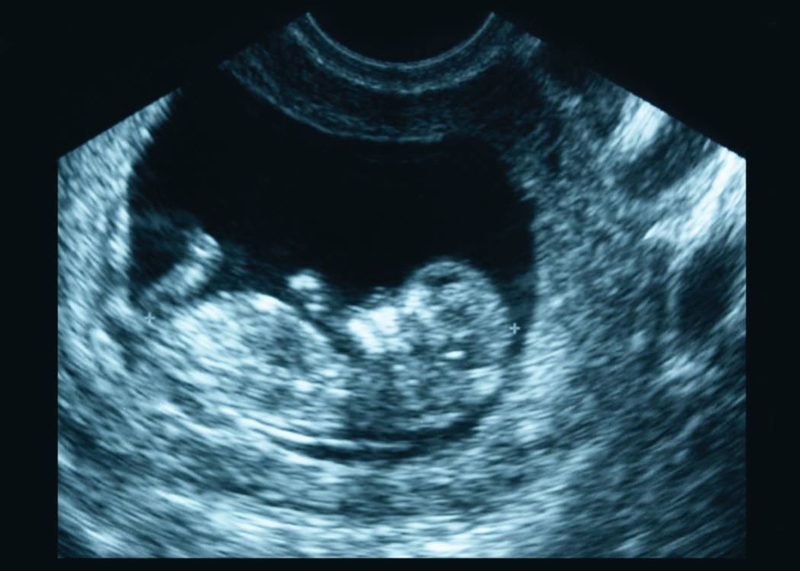

Trading Eggs for Cancer?
The Possible Health Impacts of Egg Donation
Gretchen Holm
Spring 2013
 Hey ladies: would you like to make $10,000 for about 40 hours of work?
If you’ve seen ads in search of egg
donors, you know this appeal is no exaggeration. Pictures of happy,
attractive, smiling young women surround advertisements that state that
you can make up to $60,000 by donating your eggs a few times. As a
college student, unless you are one of the lucky ones with a generous
budget, you are way too familiar with stretched finances. You know all
about maxed out credit cards, ramen noodles, greasy cheap pizza, and
sharing a small room or apartment. So the opportunity to make up to
$60,000 in $10,000 increments is hard to resist, even if it does
involve taking drugs and having a surgical procedure.
The big question for potential donors is
whether the process is as safe as all the ads make it sound. A recent
study by Louise Brinton deals with the question of increased cancer
risk in women who have had in vitro fertilization, or IVF. Of course,
egg donors do not become pregnant themselves, but the process is
similar enough to IVF that the study bears relevance to egg donors too.
In vitro fertilization involves taking
drugs that stimulate the ovaries to develop more eggs than usual.
Instead of a single egg developing, the ovaries may develop anywhere
from the average number of 15-20 all the way up to 50 or more. When the
eggs have grown large enough, they are removed in a minor surgical
procedure that involves inserting a hollow needle into the ovaries and
retrieving the eggs. The eggs are then fertilized with the intended
father’s sperm, and the most viable candidates are injected into the
intended mother’s uterus. With any luck, one (or more) of the eggs will
become a baby.
In egg donation cycles, the first half of
the process is identical. Egg donors use the same medications and
undergo the same retrieval process as IVF patients. From there, of
course, things are different: the embryos are injected into the
intended mother, not back into the egg donor.
This new study by Louise Brinton sheds new
light – mostly reassuring – on the question of whether egg donation
leads to an increased risk of cancer. She and her team of researchers
found that in women who underwent IVF procedures had no increased risk
of breast and gynecological cancers.
That’s the good news.
The bad news is that the study did find
increased risk of ovarian cancer, and this risk went up as a woman
underwent more rounds of IVF. Importantly, the study states that there
was “higher risk among those receiving four or more cycles.”
You may remember that it is strongly
suggested that a woman donate her eggs no more than six times (a
suggestion enforced by most clinics). In other words, donating the
recommended maximum number of times puts you into the higher-risk group
found in this study. The implication here is that even by following the
guidelines and donating only the recommended number of times, a woman
is still at higher risk for developing ovarian cancer than if she had
opted not to donate her eggs.
Unfortunately, the study still leaves lots
of questions. It is next to impossible to prove that a specific case of
cancer is related to IVF because that would involve ruling out every
other possible variable. Furthermore, Brinton herself does not believe
that her study included enough women to definitively prove a
correlation between IVF and ovarian cancer, according to Yahoo!
Health’s report on the article.
For egg donors, there is another important
question. Because the study was about women who underwent the entire
IVF process, from medication to re-injection of the embryos, it is not
clear what causes the increased ovarian cancer risk. It could be the
daily injections of multiple medications – a part of the procedure
shared by egg donors and IVF patients. Similarly, it could be the
retrieval process. On the other hand, perhaps the re-injection of the
embryos is the factor that somehow causes the increased risk. If this
latter option is indeed the case, a donor would not be affected.
All this sums up to say that we still do
not have firm answers. You may do all six recommended donation cycles
and walk away perfectly healthy, never to experience any ill effects
from the procedures. But just to be safe, invest some of that $60,000
into health insurance.
About the Author
Gretchen Holm, a fifth-generation Berkeley native, has been a freelance writer for several years. She is currently working as the Guide to Oakland for About.com.